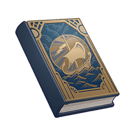

Fontaine · Books & Literature
Anecdota Septentrionalis
A three-volume Remurian scroll discovered in the Faded Castle, Anecdota Septentrionalis is a knowingly fabricated sea voyage full of impossible peoples, wars, and islands.

Three scrolls in the Faded Castle
Anecdota Septentrionalis is a three-volume collection of ancient Remurian scrolls found among the floating books of Fontaine’s Faded Castle. Each item description warns that the contents cannot be verified. No author is named.
Volume I removes any doubt about the narrator’s attitude: after criticizing poets and historians who present absurd stories as eyewitness truth, the narrator says the voyage that follows is invented. The repeated claim that it is all true is part of the joke.
Volume I: a voyage beyond the known sea
The supposed sailors travel north hoping to see where the ocean ends. They encounter giant-bird raiders, then are rescued by armored riders on Blubberbeasts. The riders mistake them for traders from another place and speak in a language the narrator calls winged.
The creatures and geography are deliberately extravagant. The scroll gives no reliable route or evidence that the sailors reached an actual coast beyond Fontaine, and it does not establish that Serenum is a real nation.
Volume II: a civil war of impossible scale
The sailors arrive in an empire called Solaris, whose ruler first doubts their claim to be Remurian because they cannot prove their homeland exists. He then asks them to join a civil war. The narrator describes disputes over a technology that gives people extraordinary abilities while changing their appearance, along with monstrous armies and weapons that launch fruit and bubbles into the sky.
The battle ends without an outcome: the narrator says playwrights leave room for future stories and does the same. This self-conscious pause is another signal that the scroll is parody, not a military record.
Volume III: the wall and Amoria
After hundreds more days at sea, the sailors find a towering wall said to hold the dead who lied in life or writing. The narrator claims the crew could not approach it because their story is completely truthful—a contradiction that continues the book’s running joke about unreliable accounts.
They later land on Amoria, an island of gold, gemstone walls, and a milk-filled moat. The welcoming inhabitants turn out to be dangerous: the narrator finds human bones, confronts one woman, and watches her disappear into water. When the crew flees, the island is gone.
A story that keeps postponing its ending
The collection repeatedly jokes about literary convention. Volume II skips the result of its war, and Volume III ends by promising another chapter. The three available scrolls never provide that continuation, leaving the voyage unfinished on purpose or by design.
The humor depends on the narrator’s grand claims colliding with absurd details and obvious contradictions. Readers are invited to notice the performance of certainty, not to solve the journey as a hidden itinerary.
What the collection can establish
The in-game catalog identifies the items as three ancient Remurian scrolls discovered in the Faded Castle and explicitly says their truth cannot be checked. The first volume also frames its own story as fabricated. Those details establish the work’s fictional, satirical presentation.
The collection is not reliable evidence for Remuria’s history, the existence of Solaris or Amoria, the people beyond the sea, or a literal wall judging liars after death. Any connection to real Teyvat locations would need support from another source.
This is an original CoreGG reading guide, not an official HoYoverse article or a reproduction of the game text. Source links below identify the records used so you can check the original context.
Sources & references
Check these sources for the original game text and reference trail.